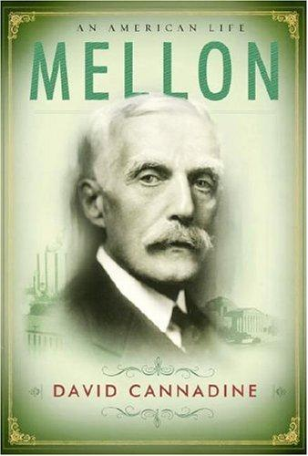

安德鲁·威廉·梅隆（Andrew W. Mellon，1855—1937）是美国镀金时代和进步时代最重要的金融家之一。他在匹兹堡将父亲创办的小银行发展为梅隆国民银行，继而以银行为杠杆，向一系列处于萌芽期的工业企业注入资本：1889年资助匹兹堡还原公司（后来的美国铝业公司Alcoa），使铝从实验室产物变为大规模工业材料；参与组建海湾石油公司（Gulf Oil），在德州石油热潮中抢占先机；投资钢铁、焦炭、合成磨料、建筑等行业，建立起一个横跨多个关键领域的产业帝国。到1920年代，他的个人所得税缴纳额仅次于洛克菲勒和亨利·福特，位列全美第三。
1921年，沃伦·哈丁总统任命梅隆为财政部长。此后十一年间，他连续在哈丁、柯立芝和胡佛三届政府中执掌财政，推行大幅削减所得税最高税率（从50%降至20%）、废除超额利润税、偿还第一次世界大战国债的政策。他以经营企业的方式管理联邦财政，被同时代人誉为"自汉密尔顿以来最伟大的财政部长"。然而1929年股市崩盘和随之而来的大萧条将他推入漩涡，富兰克林·罗斯福政府对他发起逃税诉讼——最终他获判无罪，但政治生涯已经终结。
梅隆一生中最持久的遗产，并非他的银行或产业帝国，而是华盛顿特区的国家美术馆（National Gallery of Art）。他用数十年时间悉心收藏欧洲古典绘画和雕塑，在生命最后阶段将价值两千五百万美元的藏品捐赠给国家，并出资一千五百万美元建造馆舍。他没能看到美术馆1941年的开馆，但这座建筑至今仍是美国最重要的艺术机构之一。
《梅隆：一个美国人的一生》是英国历史学家大卫·坎纳丁（David Cannadine）撰写的安德鲁·梅隆首部正式传记，2006年由Knopf出版。坎纳丁时任普林斯顿大学历史学教授，受梅隆之子保罗·梅隆（Paul Mellon）委托撰写此书，获准查阅家族私人档案。全书近八百页，从梅隆家族的苏格兰-爱尔兰移民背景写起，贯穿银行业务的扩张、工业投资的布局、华盛顿的政治角力、婚姻的破裂与孤独的晚年，以及艺术收藏从个人癖好到国家献礼的转变。坎纳丁的叙事细密而不枯燥，将商业决策、政策制定和个人性格编织在一起，呈现出一个在公共生活中无比强大、在私人情感中却极度孤独的人物。
此书出版后获得广泛赞誉，入选《波士顿环球报》2006年度最佳非虚构类图书。罗素·贝克（Russell Baker）在《纽约书评》中写道："坎纳丁像小说家一样写作，这本书读起来常常像那些长篇家族传奇一样令人欲罢不能。"他评价坎纳丁是"当代学者中的异类：一个文笔优美的历史学家，拥有小说家探索人格及其对事件影响的本能"。罗杰·洛温斯坦（Roger Lowenstein）在《纽约时报》的书评中称本书是"对一位沉闷而孤独的金融家的引人入胜的肖像——在爱情中受伤，对子女失望，悲剧性地未能获得政府的公正对待"。普利策奖得主乔恩·米查姆（Jon Meacham）称其为"一部关于令人敬畏的超级富豪的出色传记"。历史学家肖恩·威伦茨（Sean Wilentz）则评价："这位沉默寡言的保守派老人和顶级收藏家，原来也有丰富的内心世界和令人惊叹的职业生涯，坎纳丁以他一贯的严谨、人文关怀和机智将其重现。"
对于关注商业与投资的读者，梅隆的故事提供了几重独特的视角。首先是他的投资方法论：他并非投机者，而是深度介入所投资企业的运营，为它们提供资本、管理建议和战略方向，这种"银行家-实业家"的双重角色在今天的风险投资和私募股权领域仍有回响。其次是他对税收政策的思考——他主张降低边际税率以刺激资本形成和经济增长，这一理念深刻影响了此后近一个世纪的美国财政辩论。最后，他的人生轨迹本身就是一部关于财富、权力与遗产的教材：一个人可以在商业上精明绝顶，在政治上呼风唤雨，却在家庭生活中一败涂地；而他留给后世最珍贵的东西，不是财务报表上的数字，而是一座面向所有人开放的美术馆。